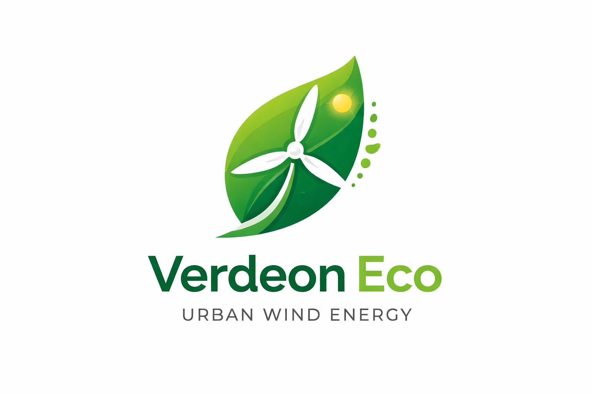

Verdeon EcoVerdeon Eco builds ultra-quiet leaf-shaped micro wind turbines designed for urban spaces — generating clean power while blending seamlessly with city architecture.
Hover to generate clean energy ⚡
Cities face rising energy costs, limited renewable space, and growing pressure to cut emissions. Verdeon Eco solves this with compact micro wind turbines designed specifically for dense urban environments.
Biomimetic turbine blades inspired by nature for higher efficiency and ultra-quiet operation.
CFD-optimized blades generate electricity even in low urban wind conditions.
Designed for rooftops, parks, and smart city infrastructure with minimal visual impact.
Verdeon Eco transforms unused urban spaces into clean energy generators, reducing electricity costs, lowering emissions, and strengthening energy resilience.
Join us in building sustainable cities powered by clean local energy.